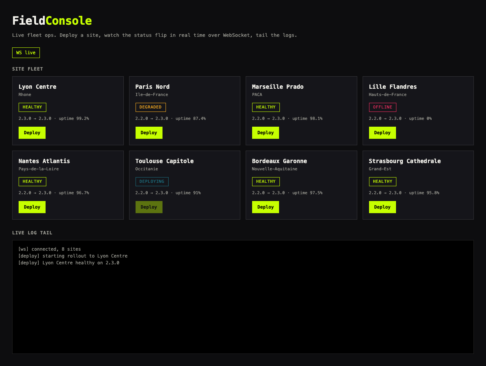

FILE / 02-FIELDCONSOLE · fleet ops
FieldConsole
Fleet ops console
One screen for every location during a rollout. Click any site to flip its status; the log records the change and metrics stream on their own. This is the panel you leave open on the second monitor while a wave ships.
"Six sites. One panel. Nothing goes dark without someone seeing it."Multi-site rollout
LIVE APP

FieldConsole fleet panel with WebSocket status and a streaming log tail.